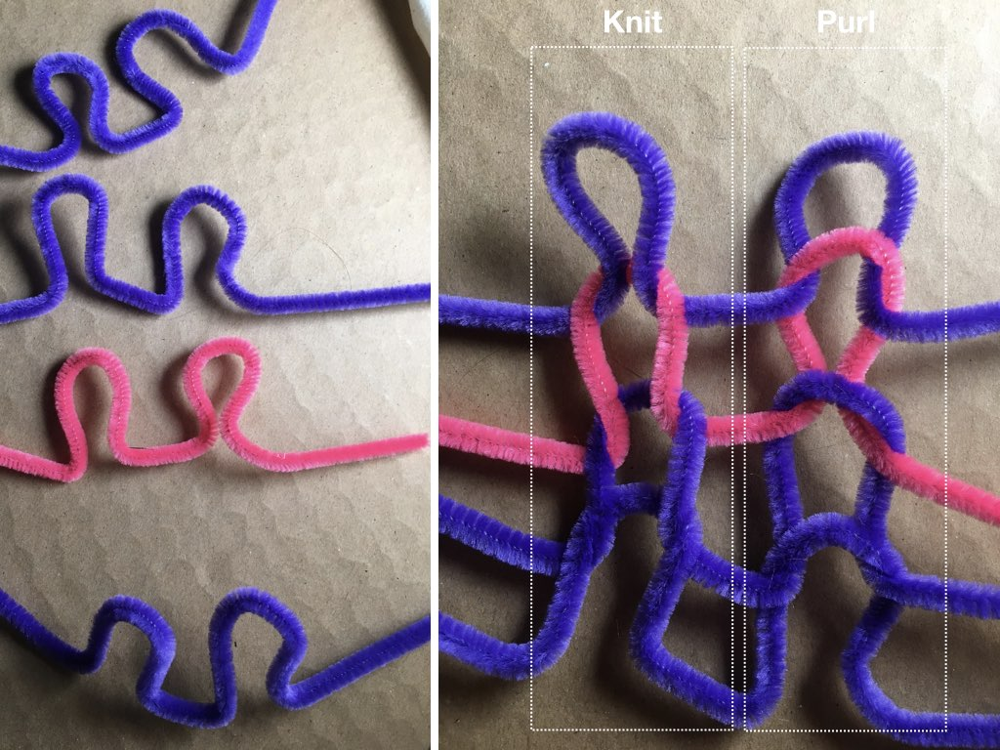
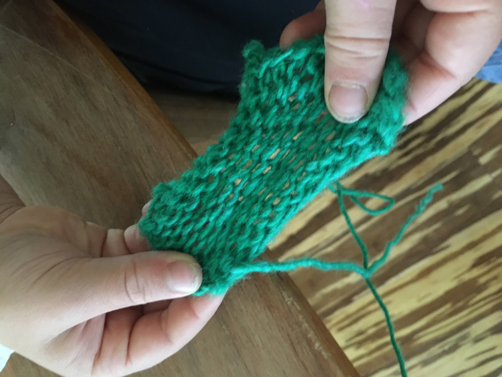

Knit #
__A knit is a textile structure created by arranging material (most often plied yarn and filaments) into a series of interconnecting loops. These interconnecting loops can create a flat-(ish) textile with the ability to stretch in all directions as well as tubular or flat circular structures that strength along their length and width. The amount of stretch for a given knit depends on the materials, density, and stitches used. A stitch describes a specific combination of yarn manipulations in the fabrication process that imbue the knit with a particular structure (we cover this more in our process section).

__
Knitting is often used for the creation of soft and stretchy textile items such as sweaters, blankets, plush toys as well as athletic garments or other garments that require a skin-tight fit.
Choices of material, stitch and density can vary across the surface of a knitted structure, allowing different regions of a single textile to display different mechanical properties. This allows for some materials to be integrated into portions or regions of the knit, etc. Additionally, one can knit with a single material or two materials in tandem, for instance, if they want to pull from a material like wool and a thin material like copper at once while their knitting, joining them in the structure without the need to ply.
Knitting allows for the construction of shapes without textile waste. One works with different patterns, structures, increasing and decreasing stitches to create shape. The structure of knits varies by the stitches used in their production, which make the knit more or less stretchy, more or less open in various regions of the overall structure.

An image showing the stretchiness of a knit swatch
The knotted nature of knits means that the materials used in knitting tend to be very flexible with a high bending radius. The inherent stretchiness of the knit structure means that materials integrated into a knit structure need to maintain their ability to stretch to avoid breaking.
Knits are described by the materials, equipment (e.g. needle size) and stitches used expressed in the form of knitting patterns.
Knit Structure Inspirations:
- Jenny Sabin: Lumen, an architectural scale machine knit project https://www.jennysabin.com/lumen
- Irene Posch & Ebru Kurbak: Knitted Radio http://www.ireneposch.net/the-knitted-radio/
- Issey Myaki APOC Zero-Waste Knits https://collection.cooperhewitt.org/objects/18698063/
- Beam Contrechoc Tiny Knittings http://etextile-summercamp.org/swatch-exchange/tiny-knittings/
- Borre Knit Design Studio https://byborre.com/pages/byborre-studio
- 3D Shape to Knit Structure Compiler: https://textiles-lab.github.io/projects/on-demand-knitting/
Primary Measurements: #
- knitted objects are best expressed as patterns, but collections of particular stitches are at times described by describing materials, needle size, yarn size and gauge used within construction.